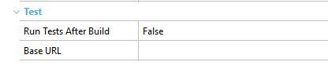

This section documents the test options that can be configured inside GeneXus IDE, and the behavior of each one. Some test options are specific of an Environment, and others are set per Knowledge Base. Environment Test PropertiesYou need to open the environment preferences to set Test properties on it:  Run Tests After Build: Boolean Base URL: String (for UI tests only) KB Version Test PropertiesYou need to open the KB Version properties and scroll down to Test group properties on it: Default Browser: String (for UI tests only) Version: String Data sets count: Numeric (for Unit tests only) |
| Backlinks | |
| Toc:GXtest v4 | Running Unit tests |